Modules & Packages
Why modules and packages are needed
Until now every program has lived in a single file. That’s fine for small programs, but think about what happens as a program grows. A complete student management system soon needs:
Student data
add, remove, update students
Marks
totals, averages, grades
Attendance
tracking who came in
Reports
report generation
Validation
checking user input
Fees
fee management
If you put all of this into one file, you might end up with something like this:
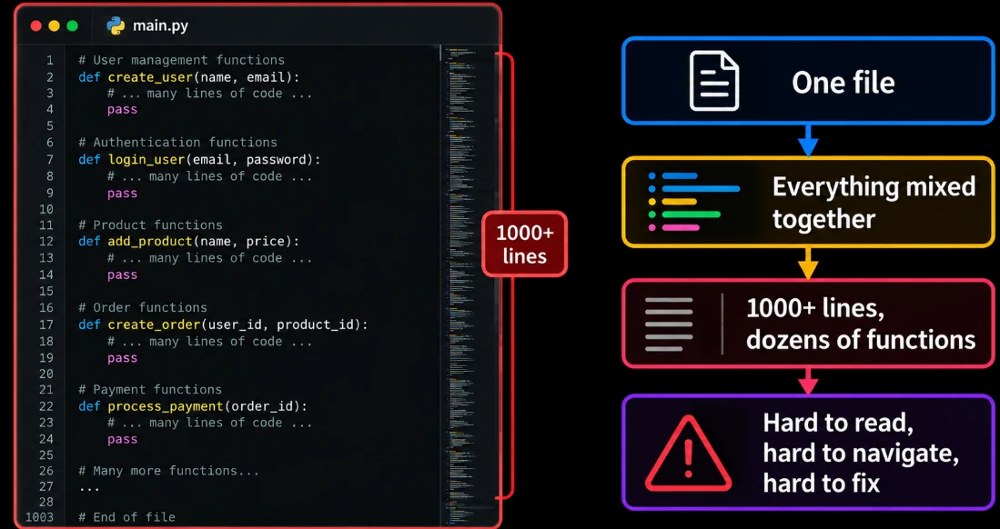
Now imagine trying to find one specific function inside a file that long, or several people working on the same file at the same time. Every small change risks breaking something unrelated sitting a few hundred lines away.
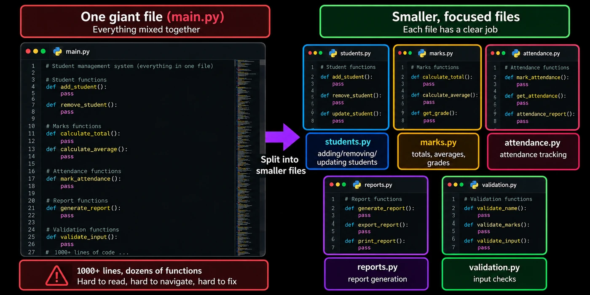
Each separate .py file is a module. A folder that groups several related modules is a package, which we’ll get to shortly.
Code organisation and reuse
Every module has one responsibility, so anyone can guess where something lives:
Modules also make reuse possible across programs. A good module isn’t tied to one project: write it once, then bring it into any program without copy-pasting.
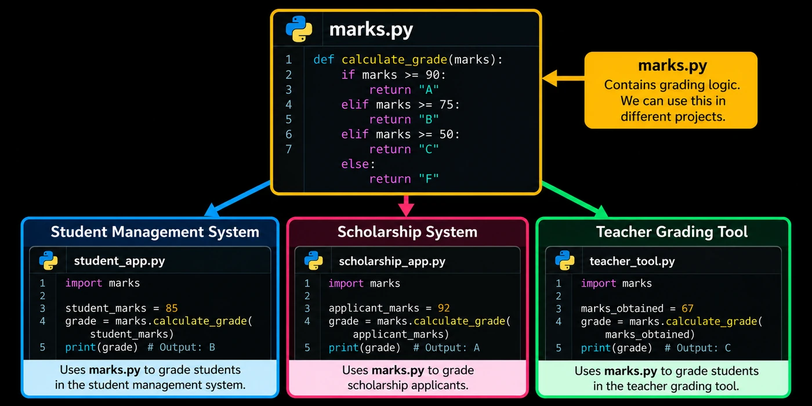
marks.py, reused by three different projects through import marks.Avoiding duplicate code
Functions remove repetition within a file. Modules extend the same idea across files. Without modules, two programs that both need calculate_average() each carry their own copy:
This brings back exactly the same problems we saw with repeated code earlier:
More code
The same function lives in two places.
Hard to maintain
Fix a bug in one copy, forget the other.
More mistakes
The two copies slowly drift apart.
With a module, there’s only one copy, living in one file, marks.py, and every program that needs it simply imports it. Fix a bug in that single file, and every program using it benefits immediately.
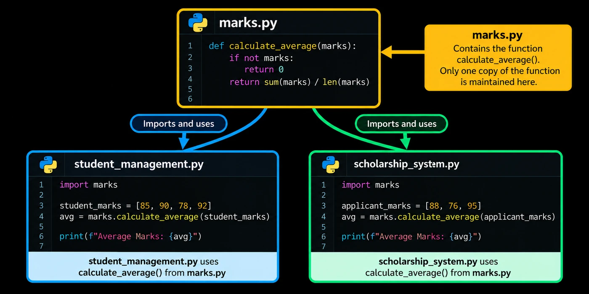
marks.py; both programs import and use it.Separating related functionality
Group code by what it does. Everything about marks goes in one module, everything about attendance in another:
def calculate_total(marks_list):
return sum(marks_list)
def calculate_average(marks_list):
return sum(marks_list) / len(marks_list)
def calculate_grade(average):
return "A" if average >= 75 else "B"def mark_present(name):
print(name, "is present")
def mark_absent(name):
print(name, "is absent")
def attendance_percentage(present, total_days):
return present / total_days * 100Now each module has a clear purpose: marks.py holds only marks-related functionality, and attendance.py holds only attendance-related functionality.
What is a module?
A module is simply a Python file (.py) containing code, such as functions and variables, that other Python files can import and use. There’s nothing special to do to “make” one: any Python file is a module the moment another file imports it.
def say_hello(name):
print("Hello,", name)import greetings
greetings.say_hello("Rahul")Hello, RahulCreating and using your first module
Create a small project with two files side by side:
student_project/
│
├── main.py
└── marks.py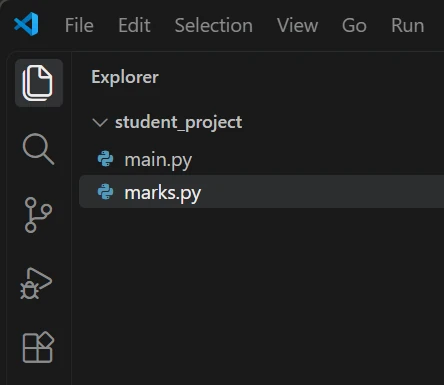
Inside marks.py, create a variable and three functions:
PASS_MARK = 50
def calculate_total(marks_list):
return sum(marks_list)
def calculate_average(marks_list):
return sum(marks_list) / len(marks_list)
def is_pass(mark):
return mark >= PASS_MARKInside marks.py | What it is |
|---|---|
PASS_MARK | a variable |
calculate_total() | a function |
calculate_average() | a function |
is_pass() | a function (it uses PASS_MARK from the same file) |
Notice that is_pass() uses PASS_MARK freely: everything inside a module can use everything else in that module.
Importing a custom module
import module_nameimport marksTwo things to notice: you write the name without .py, and imports usually go at the top of the file.
- 1main.py runs
import marks - 2Python finds marks.pyin the same folder as main.py.
- 3Loads itand makes everything inside available as
marks.something.
Using functions and variables from a module
Once imported, reach anything inside with dot notation: module_name.item_name.
import marks
scores = [85, 72, 91, 68, 79]
print(marks.calculate_total(scores))
print(marks.calculate_average(scores))
print(marks.PASS_MARK)
print(marks.is_pass(45))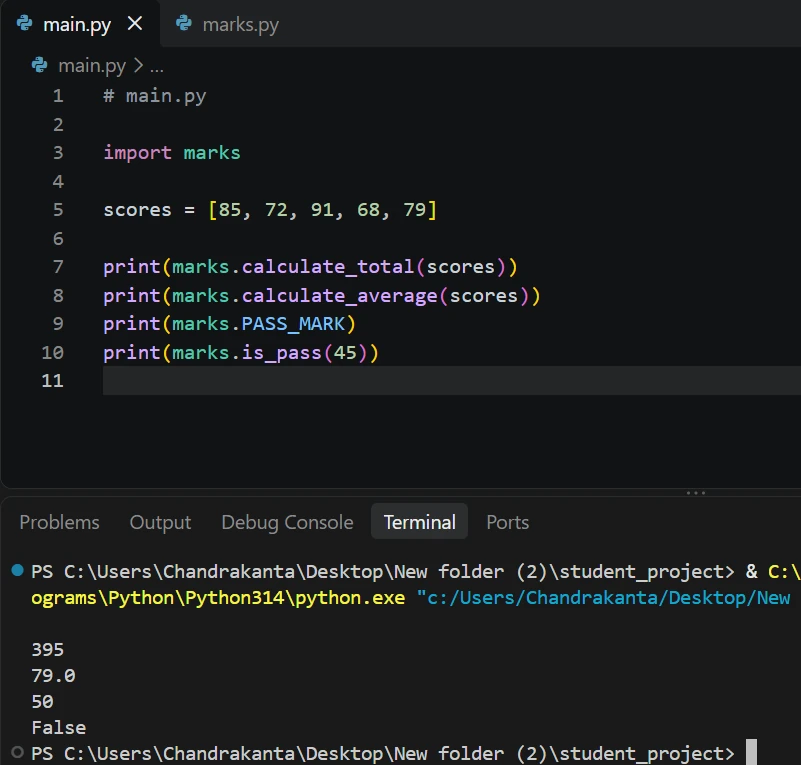
395, 79.0, 50, False.Visually, here is what happens step by step:
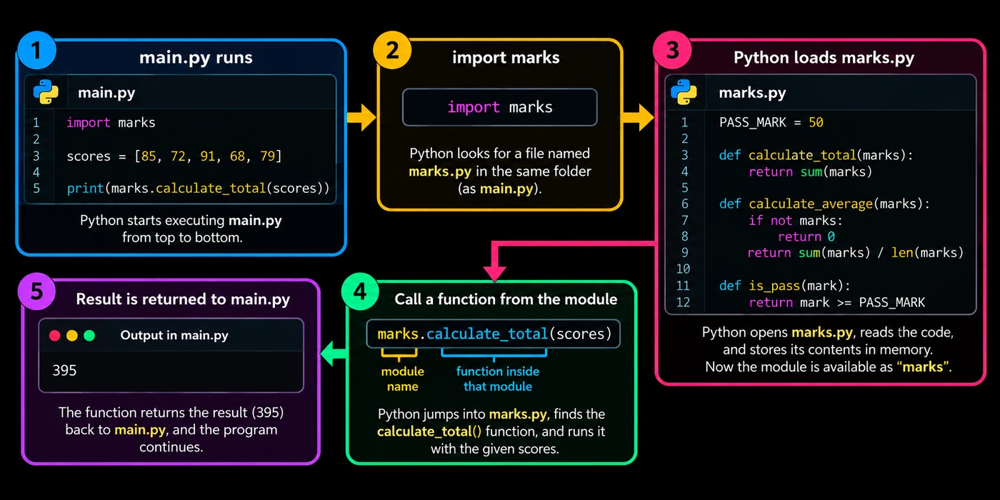
marks.calculate_total(scores): module name, a dot, then the function inside that module.The marks. prefix tells Python exactly where the function lives.
The prefix matters because two modules may each have a function with the same name; the prefix keeps them apart.
Module naming and file structure
A module’s name is its filename minus .py, so it follows the same rules as a variable name.
| File name | Why | |
|---|---|---|
marks.py | ✅ | import marks |
student_utils.py | ✅ | import student_utils |
my marks.py | ❌ | spaces are not allowed |
2marks.py | ❌ | cannot start with a number |
student-utils.py | ❌ | hyphens are not allowed |
math.py | ⚠️ | avoid built-in module names |
- Use lowercase letters, with underscores if needed (
student_utils). - Pick a name that describes what the module contains.
random.py or math.py, Python may import yours instead of the real one, and you get baffling errors like “module 'random' has no attribute 'randint'”.The import statement
Without import, a file can only use what is written inside it plus built-ins like print() and len(). Python ships with hundreds of ready-made modules, and you have your own too. import is how a file borrows code from another module.
print(sqrt(16))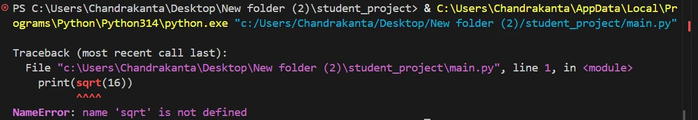
NameError: name 'sqrt' is not defined.Python doesn’t know sqrt: it lives in the math module, which we haven’t brought in.
import math- 1Python locates the math module
- 2Runs it once and loads its contents→ a second import of the same module reuses it
- 3Everything inside math is now reachableImporting doesn’t use anything yet; it only makes the contents reachable.
Accessing members with dot notation
import math
print(math.sqrt(16))
print(math.pi)
print(math.factorial(5))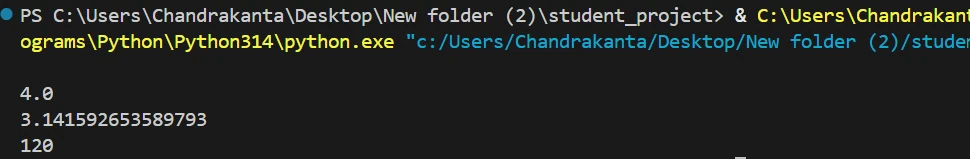
math.sqrt(16), math.pi and math.factorial(5).The module name in front tells Python where to look, which keeps things clear when two modules share a member name:
import math
import cmath
print(math.sqrt(16)) # from the math module
print(cmath.sqrt(-16)) # from the cmath module, a different function4.0
4jcmath works with complex numbers, so it can take the square root of a negative number (4j); math.sqrt(-16) would raise an error. Same name, different function. The same dot notation works with our own module:
import marks
print(marks.PASS_MARK)
print(marks.calculate_average([85, 72, 91]))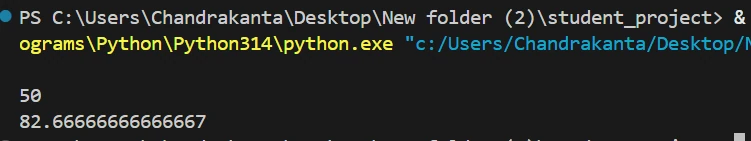
marks.PASS_MARK and marks.calculate_average().Importing multiple modules
import math
import random
import marksimport math, random, marksBoth work the same, but one per line is easier to read and is what most Python code uses.
import math
import random
import marks
print(math.sqrt(25))
print(random.randint(1, 10))
print(marks.PASS_MARK)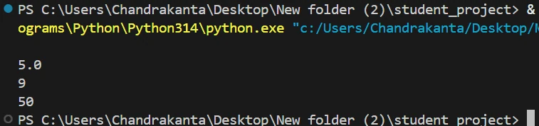
9 for random.randint(1, 10); yours may be any whole number from 1 to 10.Aliases with as
When a module name is long, give it a short nickname, an alias:
import module_name as aliasimport student_management_utils
print(student_management_utils.calculate_grade(85))import student_management_utils as sm
print(sm.calculate_grade(85))After aliasing, you must use the alias; the original name isn’t defined in your file:
import math as m
print(m.sqrt(16)) # works
print(math.sqrt(16)) # NameError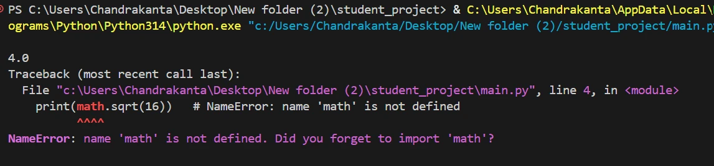
m.sqrt(16) prints 4.0; math.sqrt(16) raises NameError because only m exists.import pandas as pd, import numpy as np. These are community conventions, so stick to them.from ... import: bring in just what you need
With import math you write math. in front of everything. When you need only one or two members, pull them directly into your file:
from module_name import member_namethe module to look in
the specific member you want added to your file
For example, with import math you had to write math.sqrt(16) and math.pi. With from ... import:
from math import sqrt
print(sqrt(16))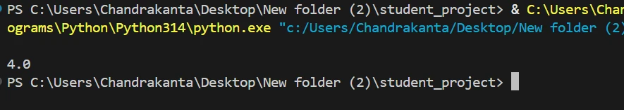
sqrt(16) works with no math. prefix.Now you write sqrt(16), not math.sqrt(16): the name sqrt was brought straight into your file, so no prefix is needed. The same works for variables:
from math import pi
print(pi)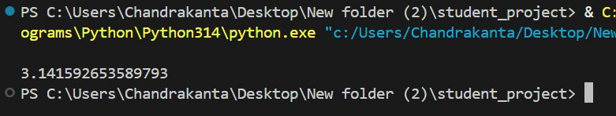
pi.And for our own module from earlier:
from marks import calculate_average
scores = [85, 72, 91]
print(calculate_average(scores))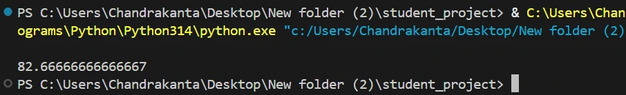
marks. prefix.Only the named member is imported
from math import sqrt
print(sqrt(16)) # works
print(pi) # NameError: name 'pi' is not defined
print(math.pi) # NameError: name 'math' is not defined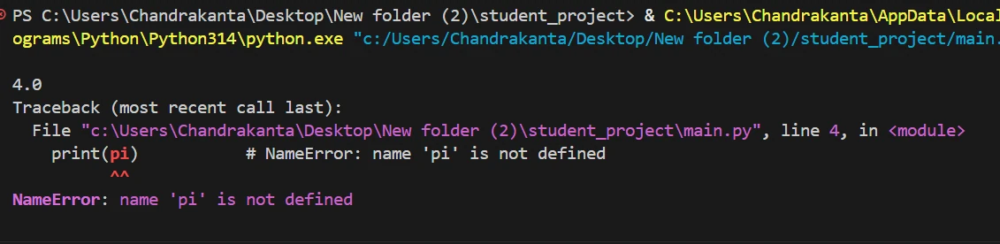
sqrt(16) works, then line 4 print(pi) raises NameError.Notice that the program stops at the first error, so the math.pi line never even runs; it would fail too, because math itself was not added to your file. Only sqrt is added; pi, factorial and the rest are not available.
import math adds one name, math. from math import sqrt adds one name, sqrt, and nothing else.Importing multiple members
To import several members from the same module, separate them with commas:
from math import sqrt, pi, factorial
print(sqrt(25))
print(pi)
print(factorial(5))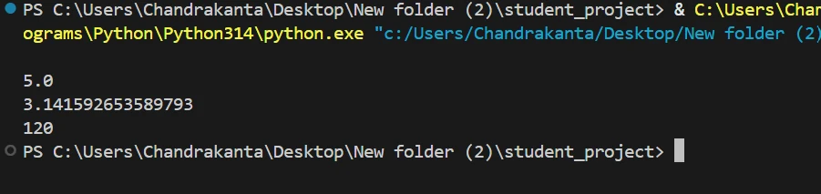
math, each used directly.With our own module:
from marks import calculate_total, calculate_average, PASS_MARK
scores = [85, 72, 91, 68, 79]
print(calculate_total(scores))
print(calculate_average(scores))
print(PASS_MARK)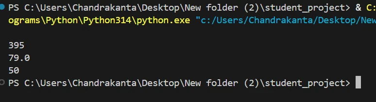
marks.Aliases with from ... import ... as
from module_name import member_name as aliasfrom math import factorial as fact
print(fact(5))
# print(factorial(5)) -> NameError: only fact works now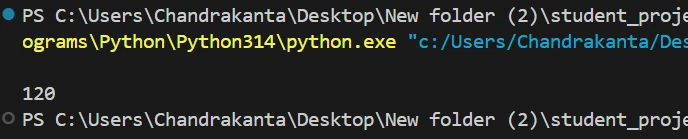
fact(5) prints 120. After this, only fact works; factorial is not defined.Aliases also solve name clashes. Suppose marks.py and attendance.py both define calculate_average:
from marks import calculate_average as marks_average
from attendance import calculate_average as attendance_average
print(marks_average([85, 72, 91]))
print(attendance_average([90, 80, 100]))82.66666666666667
90.0from attendance import calculate_average would quietly overwrite the first, because both use the same name.When to use which
| Style | Use it when… | Example |
|---|---|---|
import module | you use many things from the module, or seeing where a function comes from helps readability | marks.calculate_average() tells you at a glance which module it belongs to |
from module import name | you need just a few specific members and want shorter code | calculate_average() |
import marks
print(marks.calculate_total([85, 72, 91]))
print(marks.calculate_average([85, 72, 91]))from marks import calculate_average
print(calculate_average([85, 72, 91]))A caution about from module import *
Python also lets you import all public names from a module at once:
from math import *
print(sqrt(16))
print(pow(2, 3))
print(factorial(5))4.0
8.0
120Instead of the explicit version:
import math
print(math.sqrt(16))
print(math.pow(2, 3))
print(math.factorial(5))* is risky: look at that 8.0. Python’s built-in pow(2, 3) returns the integer 8. But from math import * silently replaced it with math.pow, which always returns a float. That is exactly the danger: * dumps dozens of names into your file, can overwrite names you already have, and hides where each name came from. Prefer explicit imports.Python packages
Modules work well for a small project. But after a few months, the student project looks like this:
student_project/
│
├── main.py
├── marks.py
├── grades.py
├── report_card.py
├── attendance.py
├── leave.py
├── fees.py
├── receipts.py
└── scholarships.pyEverything is in one folder. It’s hard to see which files belong together, and what if you need two files with the same name? You need a way to group related modules: a package.
What is a package?
A package is a folder that contains related Python modules, along with a special file called __init__.py.
student_project/
│
├── main.py
│
├── school/
│ ├── __init__.py
│ ├── marks.py
│ ├── grades.py
│ └── report_card.py
│
└── accounts/
├── __init__.py
├── fees.py
└── receipts.pyModule vs package
The difference is very simple:
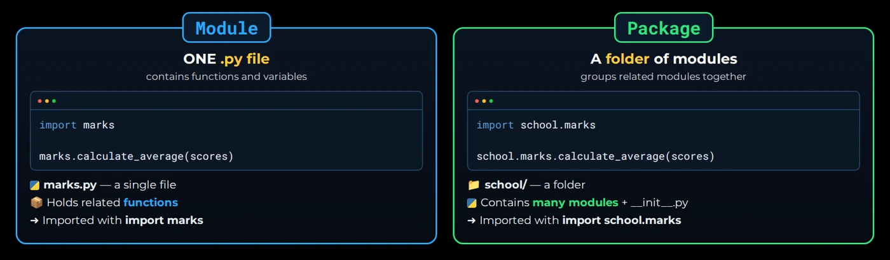
.py file (marks.py). Package → a folder of modules (school/).You have already used a package! Python’s own json is really a folder with several modules inside. Print both to see:
import math
import json
print(math) # a single built-in module
print(json) # a package - comes from json/__init__.py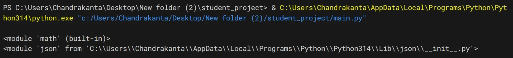
math is built-in; json is loaded from json\__init__.py inside Python’s Lib folder.math is a single built-in module. json comes from an __init__.py inside a json folder: that’s a package. (Your path will differ depending on where Python is installed.)
Why packages are useful
Better organisation
Related modules are grouped, so large projects stay easy to navigate.
No name clashes
Two modules can share a name if they live in different packages.
Easy to share
A whole package can be shared and installed as one unit.
Reuse other people’s code
Thousands of ready-made packages exist, so you don’t write everything yourself.
For example, the school and the sports department can both have a marks.py:
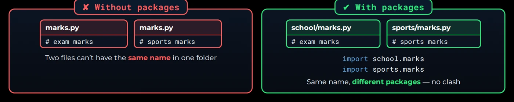
school.marks and sports.marks don’t clash.The biggest advantage is the last one. Developers worldwide publish packages on PyPI, the Python Package Index (pypi.org), and anyone can install them for free:
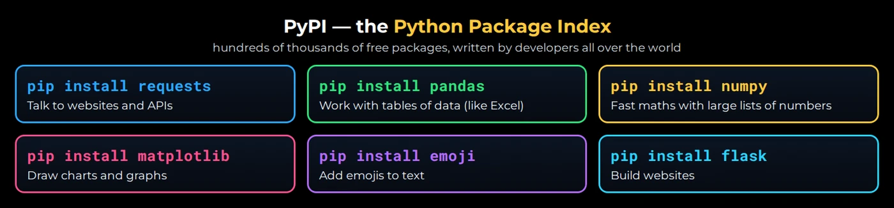
Installing packages with pip
PyPI packages don’t come with Python; you install them first with pip, the Package Installer for Python.
pip install package_namepip install is typed in the terminal, never inside a Python file. In VS Code open one with Terminal → New Terminal.Let’s install a small, fun package called emoji:
Try it
pip install emoji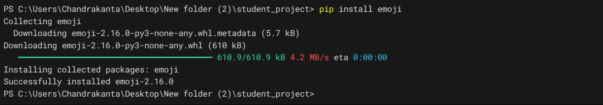
emoji-2.16.0. The version you get may be newer.Here is what happened behind the scenes:
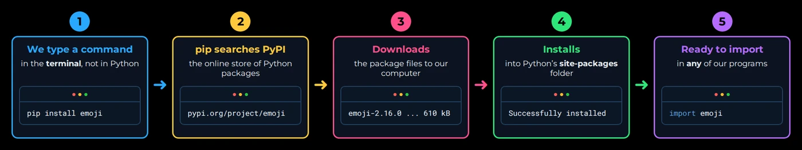
site-packages → ready to import.If you run the same command again, pip doesn’t download it twice; it tells you the package is already there:
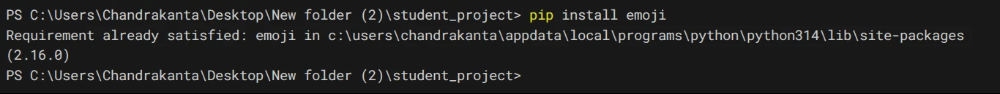
Requirement already satisfied: nothing is downloaded the second time.Other useful pip commands
| Command | What it does |
|---|---|
pip list | show all installed packages |
pip show emoji | show details about one package |
pip uninstall emoji | remove a package |
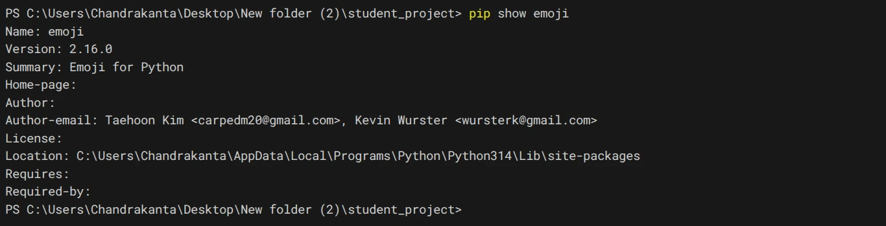
pip show emoji: the version, a summary, and where the package was installed.requirements.txt and install them all with pip install -r requirements.txt, usually inside a virtual environment, so the server gets exactly the same packages as your laptop.Importing from installed packages
Once installed, a package is imported exactly like any module, with everything from the last two sections.
Using import
import emoji
print(emoji.emojize("Great job :thumbs_up:"))
print(emoji.emojize("Python is fun :snake:"))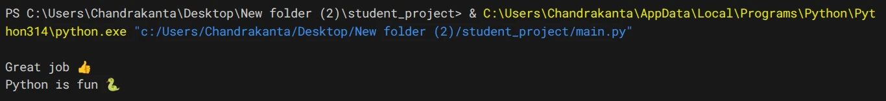
:thumbs_up: and :snake: codes became real emojis.emoji.emojize() replaces codes like :thumbs_up: with real emojis. You didn’t write it; someone else did, and you simply installed and imported it.
Using from ... import
from emoji import emojize, demojize
print(emojize("Rahul scored 95 :party_popper:"))
print(demojize("I love Python 🐍"))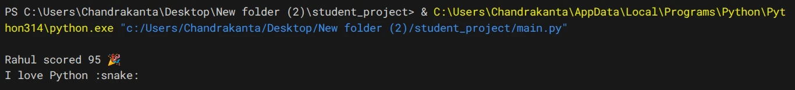
emojize turns codes into emojis; demojize turns emojis back into codes.Using an alias
import emoji as em
message = "Rahul scored 95 🎉🎉"
print(em.emoji_count(message))
print(em.is_emoji("🎉"))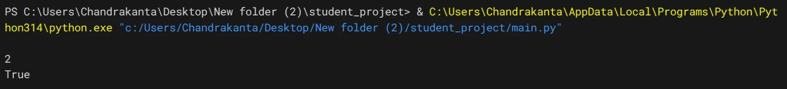
em.emoji_count() finds 2 emojis; em.is_emoji("🎉") is True.What if the package isn’t installed?
import emoji
print(emoji.emojize("Great job :thumbs_up:"))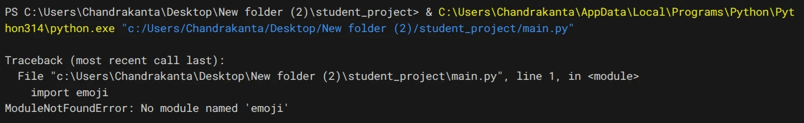
ModuleNotFoundError: No module named 'emoji', raised at the import line.The fix isn’t in your code. Run pip install emoji in the terminal first.
Building your own package
Let’s turn the marks and attendance modules into a package called school:
student_project/
│
├── main.py
│
└── school/
├── __init__.py # empty file - makes school a package
├── marks.py
└── attendance.py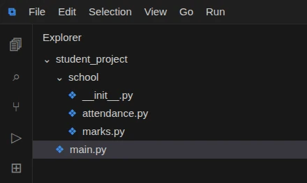
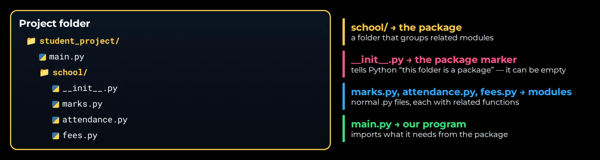
- 1Create the folderMake
schoolinsidestudent_project. Package names follow module rules: lowercase, no spaces. - 2Add
__init__.pyInsideschool, create an empty file named__init__.py(two underscores before and after). It tells Python “this folder is a package”, and can stay completely empty. - 3Add the modulesWrite
marks.pyandattendance.pyinside the folder. - 4Import from main.pyUse dot notation:
package.module.
def calculate_total(marks_list):
return sum(marks_list)
def calculate_average(marks_list):
return sum(marks_list) / len(marks_list)def attendance_percentage(present, total_days):
return present / total_days * 100Three ways to import from the package
import school.marks
scores = [85, 72, 91, 68, 79]
print(school.marks.calculate_total(scores))
print(school.marks.calculate_average(scores))school.marks.calculate_total and calculate_average, reached through the full path.Writing school.marks. every time is long. Just like with modules, from ... import makes it shorter:
from school import marks, attendance
scores = [85, 72, 91, 68, 79]
print(marks.calculate_average(scores))
print(attendance.attendance_percentage(45, 50))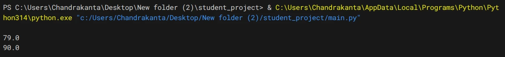
79.0 and attendance 90.0 percent.And you can go one step further and import just the function:
from school.marks import calculate_average
print(calculate_average([85, 72, 91, 68, 79]))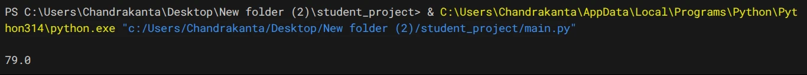
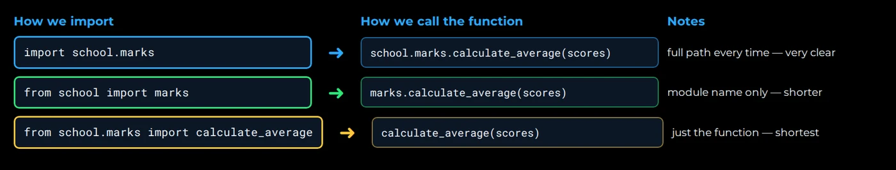
A package is just one more level of organisation: like going into a folder, opening a file and picking a tool.
__name__ and "__main__"
The problem: code that runs when you only wanted to import
Suppose marks.py has a function plus two lines at the bottom to quickly test it:
def calculate_average(marks_list):
return sum(marks_list) / len(marks_list)
print("Testing marks module...")
print(calculate_average([80, 90, 100]))Run python marks.py directly and the test lines are useful:
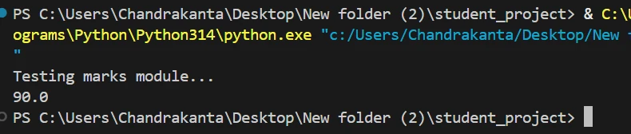
marks.py directly: the test lines print.Now main.py imports it:
import marks
print(marks.calculate_average([85, 72, 91]))You might expect only 82.66666666666667. But Python actually prints:
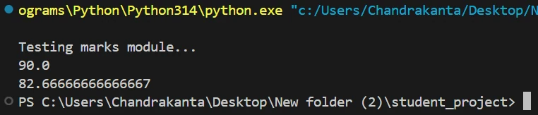
main.py: the test lines from marks.py sneak in before our result.The first two lines came from marks.py. Why? When Python sees import marks, it loads marks.py and executes all its top-level code: the def (stores the function) and the two prints.
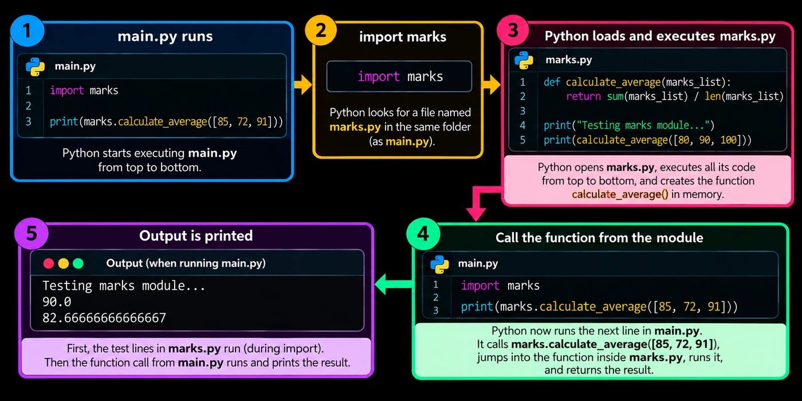
main.py’s own call prints its result.We want the function available when imported, but the test code to run only when the file is executed directly. That’s what __name__ is for.
What is __name__?
Every Python file automatically gets a special variable called __name__. Python sets its value depending on how the file is being used:
Run directly
python marks.py
→ __name__ = "__main__"
Imported
import marks
→ __name__ = "marks" (the module name)
See it for yourself:
print(__name__)import show_name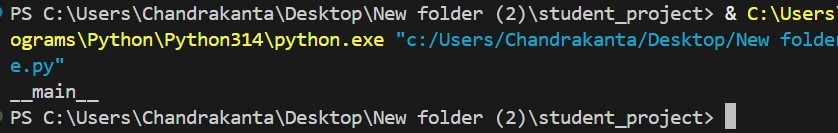
python show_name.py prints __main__, because this file is the starting point.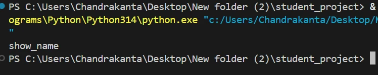
python other.py prints show_name, because show_name.py is now being imported, not run directly.The important difference, side by side:
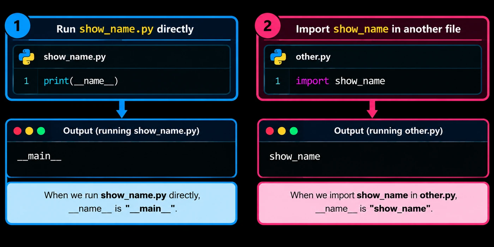
__name__, depending on how the file is used.What does "__main__" mean?
"__main__" is the special name Python gives to the file that starts the program. Run marks.py and it is the starting file, so its __name__ is "__main__". Run main.py (which imports marks) and main.py is the starting file, while marks.py is just an imported file with __name__ = "marks".
Using it with if
if __name__ == "__main__":
print("This file is being run directly")Fixing our original problem
def calculate_average(marks_list):
return sum(marks_list) / len(marks_list)
if __name__ == "__main__":
print("Testing marks module...")
print(calculate_average([80, 90, 100]))The file now has two parts: the function, usable by other files, and the guarded test code, which only runs directly.
Run python marks.py
- 1Python sets
__name__ = "__main__" - 2
if "__main__" == "__main__":is True
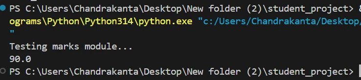
Run python main.py (which imports marks)
- 1Inside marks.py,
__name__ = "marks" - 2
if "marks" == "__main__":is False, so the tests are skipped
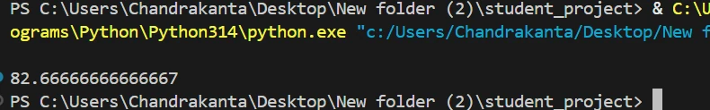
main.py’s result prints.if __name__ == "__main__": main(). It lets the same file work as a command-line tool and as an importable library for tests or other services.Key terms
- Module
- A single Python file (
.py) whose functions and variables other files can import and use. - import
- The statement that loads a module and makes its contents reachable, e.g.
import math, thenmath.sqrt(16). - Dot notation
- Reaching a member inside a module or package with
name.member, e.g.marks.PASS_MARKorschool.marks.calculate_total(). - from ... import
- An import form that adds only the named members to your file, e.g.
from math import sqrt, so you callsqrt()without a prefix. - Alias (as)
- A nickname given to a module or member at import time, e.g.
import math as m; afterwards only the alias works. - from module import *
- Imports all public names of a module at once; discouraged because it hides where names come from and can overwrite existing names.
- Package
- A folder of related modules containing an
__init__.pyfile, e.g.school/. - __init__.py
- A (usually empty) file inside a folder that marks the folder as a Python package.
- PyPI
- The Python Package Index: the public online collection of packages that anyone can install.
- pip
- The Package Installer for Python, run in the terminal, e.g.
pip install emoji,pip list,pip uninstall emoji. - ModuleNotFoundError
- The error raised when you import a module or package Python can’t find, often because it isn’t installed yet.
- __name__
- A special variable in every file:
"__main__"when the file is run directly, or the module’s name when it is imported. - if __name__ == "__main__":
- A guard that runs its block only when the file is the program’s starting point, not when it is imported.
Self-check
Pick an answer. You’ll see right away whether it’s correct and why.
You have marks.py next to main.py. Which line imports it?
import marks.pyimport marksinclude marksfrom marks.py import *
You write the module name without the .py extension.
After from math import sqrt, which line fails?
print(sqrt(9))x = sqrt(16) + 1print(sqrt(2) > 1)print(math.pi)
Only sqrt was added to your file; the name math itself was not.
After import math as m, what does math.sqrt(16) do?
- Raises
NameError - Returns 4.0
- Returns 4
- Imports math again
With an alias, only m is defined in your file. Use m.sqrt(16).
Which file name can be imported as a module?
student-utils.py2marks.pystudent_utils.pymy marks.py
Module names follow variable naming rules: no hyphens, no spaces, can’t start with a digit.
What turns an ordinary folder of modules into a package?
- Naming it in capitals
- An
__init__.pyfile inside it - Running
pip installon it - A
main.pyinside it
__init__.py (it can be empty) marks the folder as a package.
Where do you type pip install emoji?
- At the top of your .py file
- Inside an
if __name__ == "__main__":block - In the Python
>>>shell - In the terminal
pip is a command-line tool. Your .py file only contains import emoji.
main.py runs import marks. Inside marks.py, what is __name__?
"__main__""main""marks"None
An imported file’s __name__ is its module name. Only the starting file gets "__main__".
Why did test prints at the bottom of marks.py appear when main.py imported it?
- Importing runs the module’s top-level code
- print() always runs twice
- main.py copied the prints
- pip ran the file
Import executes the module top to bottom. Wrap test code in if __name__ == "__main__":.
All of it, in one sentence
A module is one .py file and a package is a folder of modules with __init__.py; you bring their code in with import (use module.name) or from … import (use the name directly), rename with as, install outside packages with pip, and guard test code with if __name__ == "__main__".
Next up: Working with Data, where your programs start reading and writing real files.
— Vishwa Mohan